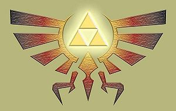
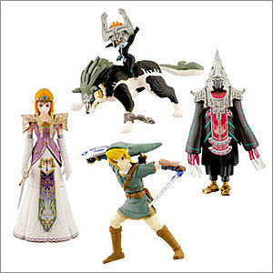
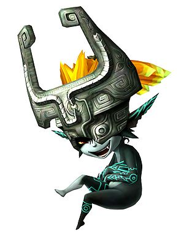

The Legend of Zelda: Twilight Princess
 De: La Frikipedia, la enciclopedia extremadamente seria.
De: La Frikipedia, la enciclopedia extremadamente seria.
De la serie Videojuegos:
The Legend of Zelda: Twilight Princess

Hipervinculo tratando de no ser violado por estos guerreros de metal
| Desarrollado por:
|
Link
|
| Distribuido por:
|
Noentiendo
|
| Diseñado por:
|
Un gordo sin nada que hacer
|
| Motor
|
Una fuerza magiga
|
| Género(s)
|
aventura
|
| Fecha de lanzamiento:
|
quien sabe, cuando entre al block ya estaba ahi
|
| Modos de juego:
|
correr, y lanzar flechas
|
| Requisitos:
|
ser un poco ñoño
|
| Disponible en:
|
más bien donde no esta disponible ?
|
| Formatos:
|
gamecube
|
| Edades:
|
-89
|
| Puntuaciones:
|
56 +
|
Soy muy joven para matar ?
The Legend of Zelda: Twilight Princess es el juego de la layenda de zelda, aqui se narra la historia de como un loco-marica-raro,Zant, sumerge al mundo en la OBSCURIDAD (o bien en un lugar con un poco menos de visibilidad que el mundo real) donde todos son unos espiritus y los monstruos son... bueno mas feos. Entre los detalles mas notables estan:
- Sistema de juego igual al de Ocarina of Time
- Los movimientos "Parry" de Wind Waker converidos en skills
- Graficos Realistas (como los de Ocarina of pero MEJOR...casi)
- El poder convertirte en un lobo (si el Ocarina of time se pudiera seguro que seria basado en eso)
- Poder hablar mas de una vez con Zelda (aunque sea como lobo)
- Ya mencione que este titulo es como un Ocarina of Time 3.12.5.6
Personajes
 La trifuerza que nunca usaras
 Los de Noentiendo siempre exprimiendo la franquicia
Los dividire en Viejos y Nuevos (vamos los pude dividir en feos y bonitos, gordos y flacos, animales y bestias...etc XD)
Viejos o Clasicos
- Hipervinculo:A.K.A: Link, es el personaje jugable y co-protagonista del juego, lo interesante esta vez es que desde el comienzo se le puede ver la trifuerza tatuada en la mano derecha (en Ordon creen que es una marca de nacimiento que brilla en la obscuridad), pero no se hace referencia para nada de esto, algo muy raro, porque los de Noentiendo siempre sacan provecho al maximo de esta serie... ahora se sabe la edad de Hipervinculo: 17 años y es un casanova (ver sección "Los Levantes")
- Zelda: Que seria de un Zelda sin...Zelda? (bueno hay varios en los que no sale, como en Majora's Mask y A Link's Awakend), ella hace una aparicion mas notoria en este juego, ahora se la ve mas madura y con la firmeza suficiente para dejar su reino en manos de Zant, tambien se ve que porta una espada, pero no la usa y tambien se la ve mas....mas....eh....bueno....no se, ahora tiene un no-se-que que la hace ver sexy.
- Ganondorf: Su entrada es de lo mas forzado y rebuscado del título, solo él sabe que es lo que hace aqui porque en la historia no pinta en nada, pero bueno ahi van los cuates de Noentiendo, exprimiendo la serie, se supone que el controla a Zant o le presto suspoderes o algo asi, sin embargo al final es el mismo Zant quien lo despacha (al menos eso parece)
Nuevos
- Midna: La otra Co-protagonista del juego, ella no es jugable directamente, pero no es un personaje de apoyo como navi, de hecho si no fuera por ella no tendria sentido la aventura (Ver seccion "Entrando al Crepúsculo"), ella siempre esta con hiepervinculo, pero solo es visible cuando el esta en su estado canino (forma de perro...no perron, solo perro), es sumamente mandona, sarcástica, lujuriosa, en fin, todas las virtudes de un personaje digno de ser el protagonista de su juego.
- Zant: Es el villano del juego (o al menos hasta que te das cuenta que el villano es ganondorf), al principio en un ente maligno, siempre que aparece se escucha un grito muy raro, ademas lleva un máscara de Zora (cabeza de pescado), en una part del juego deja ver que tiene una muy mala higiene dental (se le ve una baba verde donde deberia tener DIENTES!!!), pero cuando hipervinculo puede por fin medir fuerzas con el, el muy marica se desquizia totalmente, haciendo una versión muy rara del baile de los 7 velos y bueno deja ver su rostro el cual es el de un simple bufon del reino del crepúsculo, al final Midna lo elimina (nuevamente hipervinculo se rasca los huevos mientras Midna hece el tabajo)
- Occoo: Este es un pollo mamón y cabezón que te sale desde la primera mazmorra (Al principio te saca un puto sustaso de lo feo que es el cabrón) y tambien sale su hijo, otro pollo pendejo que le sale del culo, su unica utilidad es
complacer tus tendencias zoofilicas Teletransportarte al inicio de la masmorra y guardarte el checpoint para que te vallas hacer una pajilla por si necesitas recargas tus pociones y despues volvé.
- Ilia: Es una puta de la que Ilia se enamora de Hipervinculo pero este ni la pela ya que el quiere realmente follarse a Midna en su forma real.
Prologo
Todo comienza en la tranquila y sana villa de Ordon, alli es donde Ilia, la cual por razones desconocidas quiere tener a Epona solo para ella (Epona) es la YEGUA de Hipervinculo)... (Pueden pensar mal si quieren pero es cierto Epona es una Yegua).
Entrando a el Crepúsculo
El día 0 (osea el dia que le toco ir a Hyrule a hipervinculo) unos duendes bien raros llegan a causar problemas, no solo dejan inconsiente a hipervínculo, sino que tambien secuestran a Ilia y los niños, luego por obra y garcia de algo o alguien, todo se sumerje en una obscuridad de color anaranjado, donde es muy dificil ver algo aparte de uno cuadritos de color negro simulando ser cenizas, pero con lo que los monstruos no contaban (ni el propio hipervínculo tampoco) era que cuando el entro al crepusculo se transformoa en un vil perrito gris que ladra y muerde como cualquier otro perro sin nada NADA especial el gran lobo sagrado o bestia ojiazul sagarda, elegido por los dioses para salvar al mundo. Cuando hipervinculo se da cuenta de lo sucedido (y acepta su nueva forma canina) se encuentra prisionero (osea que lo primero que el jugador hace como perro es ladrar con B y jalar la cadena coo cualquior otro perro "WAO")lugeo conoce a Midna una pequeña lujuriosa que lo estuvo observando desde que entro al crepúsculo y penso que le seria util para sus planes, ella lo ayuda a escapar a cambio de sexo su colaboracion para encontrar cirtos items que ella quiere (en serio el proposito del juego va en funcion de lo que Midna quiere, porque entonces el juego no se llamo "THE LEGEND OF MIDNA"). Ahora las presentare de forma breve los lugares y uno tips para cada uno de ellos.......bueno en relidad solo les mencionare los lugares
Lugares
- Provincia Ordon: es aqui donde comienza la aventura, con un
muy gay interesante cinema donde Rusl le encarga a Hipervinculo el llevar un presente a la Ciudad de Hyrule. Entre lo que haras mientras estes en tu hogar (lo cual no es mas del 0.000000001% del tiempo de juego) esta: arrear el muy raro ganado, recuperar el canasto de un bebe para luego estar casi 10 caminando hacia la casa de Rusl (por que la muy huevona de su mujer quiere que carges el pinche canasto hasta la entrada), pescar para alimentar a un gato y robarte la espada y escudo iniciales (si al final te robas la encomienda que ibas a llevar a Hyrule, Midna es una mala influencia).
- Provincia Faron: aqui esta el primer calabozo y los bosques de Faron, te encuentras con un tio hippie, que te regala una linterna, pero el muy desgarciado luego te vende una botella de aceite en 100 rupies!!! (mira que asi se cobro la linterna), fuera de eso esta el calabozo donde tu objetivo sera rescatar a todos los jodidos monos que calleron en manos de los malditos duendes (quien sabe para que querian,los monos)
- Provincia Eldin: luego de un rato (aproximadamente 1/2 hora despues de empezar a jugar) llegaras a la provincia Eldin, aqui esta kakariko village, hogar de una muy nutrida poblacion (un chaman y su hija, luego llegan los niños de Ordon) y tambien esta el camino hacia la montaña de la muerte, hogar de los gorons. Al inicio del juego y solo por joder los malditos gorons te atacan, lo cual por supuesto te obliga a desrtripar a todos y cada uno de ellos, pero como los bichos esos son de piedra, no les haces ni cosquillas, asi que bebes regrersar a tu pueblo a buscar el arma mas mortifera, capaz de acabar con la vida de un goron en un solo instante, el mortal bujero nero, pero como no te lo dan te debes conformar con las botas de hierro. En este lugar tienes misiones mas interesantes, como luchar contra los gorons en peleas de sumo (si sumo como los japoneses obesos), rescatar al hijo gay de Rusl de los ya mencionados duendes, y claro el calabozo de los gorons, que no es mas que un volcan, donde debes buscar las tres llaves para ir al cuarto del jefe.
- Provincia Lanaru: es la mas grande de todas, pasaras cerca del 80% del juego aqui, iendo viniendo, aqui hay muuuuchas mas misiones y peleas interazantes, algunas misiones son: encontrarte con Ilia (aunque ella
fue brutalmente violada por los duendes y se hace la que ni te conose porque si no los duedes no la tocarian mas porque le gusto mucho lo que le hicieron padece amnesia y ni se acuerda de su nombre y como Hipervinculo ni habla pues que ni modo), regresar a kakarico village por medio de un camino tomado por lo duendes, visitar el domino Zora (DONDE TODOS TODOS LOS HABITANTES SON MUJERES-PEZ), luego debes revivir a Midna cuando el espiritu de la luz la viola hiere accidentalmente, ir al lago Hylia y entrar al calabozo que hay ahi, viajar al desierto y al a las montañas y visitar el bar de Telma inumerables veces. En el templo Zora no hay objetivo, pero el lugar es ridiculamente grande, muuuucho mas que los calabozos que visitaste antes y corres el riesgo de perderte a cada segundo, por lo que el objetivo pudiera ser no encojonarse hasta llegar al jefe.
- Provincia Pico: o Peack Province, son las montañas, el lugar es bien pequeño, todo va casi en lienea recta, hasta llegar con el Yeti, aqui tu mision es simplemente hacer sociales, llegas a la casa del Yeti, hablas con su mujer y ella te dira donde ir para explorar el calabozo, de hecho cuando encuentres la llave de la recamara ella te escoltará personalmente alla (claro y luego dicen que es hipervinculo el que las viola, mira que se lo buscan), y bueno, en relidad es el lugar menos interesante del juego.
- Provincia Desierto: como te debes imaginar es un desierto, bastante grande, pero nada fuera de lo comun, hay algunas misiones, como: infiltrarte en una base enemiga, llegar al calabozo donde tu objetivo será eliminar a los 4 poes que roban el fugo de la entrada (DONDE HE VISTO ESO ANTES.....), ademas de abrir la entrada al Crepúsculo. (digo si elllos invadieron Hyrule, ahora tu debes hacer lo mismo, algo así como la filosfía de Bush).
- El Palacio del Crepúsculo
abierto: aunque se supone que el crepúsculo es un lugar casi tan grande como el mismo Hyrule, solo eres capaz de visitar este pequeño castilo, que viene siendo un calabozo, el objetivo, mover las bolas de Luz (llamadas SOL...que original), al centro del lugar y evitar que te las quiten las manos flotantes de piedra, al final te enfrentarás con Zant, quien se saldrá del closet, por decirlo así, y te atacará con toda la furia de un Gay-Emo reprimido.
- El Castillo de Hyrule: (nuevamente repito DONDE HE VISTO ESTO ANTES.... bueno en cada Zelda debe salir el castillo así que esta bien), el último lugar que visitas, es tambien un calabozo, algo grande, pero no mucho, el objetivo OBVIAMNETE es llegar donde Ganondorf, pero hay detallitos buenos, como que en este calabozo "vez gente muerta" y al entrar no hay sonido, salvo el de las criaturas.
- Villa Escondida: como su nombre lo indica esta ala vista de todos..... jajaja, es chiste, en relidad esta bien escondida, debido a una avalancha de rocas, es un pueblo al mero estilo del lejano oeste (pero no sale Salma Hayeck), hay dos misiones, pero solo una es obligatoria hacerla, debes derrotar a 20 ogros antes de que
violen brutalmente le hagan daño a la persona que salvo a Ilia, la otra es hablar (si HABLAR) con lo 20 gatos que hay en el pueblo.
Los Levantes
Hipervinculo es todo un casanova, pues en este juego se levanta a cada mujer, niña y mona que se encuentra, si o me creen:
- Ilia: es como la mejor amiga de hipervinculo,pero ella lo quiere es que la
folle hasta el cansancio vea como algo mas que una amiga, claro que el tambien la quiere y de hecho deja que midna lo gobierne para poder salvarla... hasta que vea Midna transformada en su forma real.
- Beth: es una pija pecosa de aproximadamente 12 años, ella aprenta estar enamorada de Hipervinculo, pero al ver que se le crece los huevos al hijo de Ruslt, ya saben el guerito gay, se ve atraida por el, hasta que se da cuenta que el chico zora es hombre y aparte principe, entonces siente un gran afecto por él, ummmm, maldita interesada.
- Telma: la primera vez que lo vio le echo una mirada tan lujurisa que por eso fue que el juego fue catalogado como T (no por sus tetas sino por el contenido o lenguaje de adultos, aunque si hubiera sido por sus tetas, el juego sería M o AO), luego durante toda la peripecia del viaje a Kakarico Village, ella se la pasa enmorando hipervinculo, hasta que finalmente posa sus lujuriosos ojos en el Chaman, el cual ni la pela, pero bueno, que esperaban.
- Reina
Zorra Zora: ella ya esta muerta cuando conoce a Hipervinculo, pero le ofrece una orgia de zoras un poder especial a cambio de que la folle salve a su hijo, claro que esta de que si estuviera viva, Hipervinculo se volveria el rey de la zorras Zoras.
- Ashei: es una tia emo de las montañas, bastante fribola, es parte del grupo de los 4 fantasticos (4 orates sin nada que hacer por lo deciden juntarse en el bar de Telma para salvar a Hyrule, como si realmente pudieran), ella parece odiar a Hipervinculo, pero como todas, quiere ser
follada amada por el Heroe Legendario (ahi que hayan tantos Hipervenclos).
- Midna: como podía faltar, de hecho al fianl del juego, ella se hace la importante y huye para que Hipervinculo no la siga, parte el espejo del crepúsculo, creo que en el fondo no quería ser tan mala onda con Zelda.
 Midna en su forma normal, que no te engañe, se rie porque acaba de matar a Zant
- Zelda: aunque solo lo vio como lobo, se sintio atraida por ese instinto animal, jajaja, vaya chiste malo, luego cuando deben pelear juntos contra Ganondrorf se da cuanta que él es el heroe de la Leyenda, la única razon por al Hipervínculo no se
la folla enamora de ella, aparte de que Midna esta bien cachonda, es que el esperaba que ella le diera las flechas de Luz, de echo se ve como extiende los brazos para recibirlas, pero Zelda, se encojona por la violada posecion de Ganondorf y deside ser ella quien le cave las flechas, algo asi como para que sepa lo que se siente, jejeje.
Jefes
Como en todo juego hay jefes, ya sabes esos seres con mucho PODER que quieren partirte el alma, he aqui la forma de enfrentar a los muy variados jefes de este juego.
- Planta de dos Cabezas: es el primer jefe, por ende el mas
gay debil de todos, para enfrentarlo debes usar el boomerang, con el atraeras unas bombas y las aventaras a la planta deforme, cuando caiga entonces le metes espadazos hasta que muera, lo cual no tarda mucho.
- Goron Mutado Infernal: es el patriarca de los gorons poseido por el PODER de las fused shadows, para cargartelo, clavale una flecha en el tercer ojo que le sale, luego hala sus cadenas con ayuda de las botas de hierro, ahora si, partele el
culo trasero a espadazos.
- Anguila Gigante con Bigototes: es una especie de paracito del mar, es el jefe mas grande en tamaño, para que te hagas un plato de anguila, dispara tu telaraña, digo garra mecánica en el ojito que se mueve, ahora solo dale hasta que se forme la buena, cuando el bicho sale nada velozmente tras de el, ahora clavale la garra, y finalmente empieza la lluvia de espadazos hasta matarlo, o que se te canse el brazo o dedo, este bicho aguanta mas.
- Gnarls Barkly: solo como lobo puedes enfrentarte a el, es una especie de garrapata obesa e invisible, solo debes satar, morder, usar el circulo de energia y lo acabaras.
- Esqueleto Zombie con una Espada Clavada: a este esqueleto Zant lo revive
teniendo sexo con el, clavandole una espada obscura, para eliminarlo usas el trompo y chocas con el, luego cuando se levante de nuevo y sea solo una cabeza que flota vuelve a chocar con el trompo y lo terminaras.
- Bruja Jeti: no la vas a matar, en serio, ella s eencierra en una coraza de hielo, tu debes romperla con tu espada, cabeza, bombas, bola de metal con cadena, hasta que quiebres toda la coraza, ya sin ella la bruja chillara y tu la habras vencido.
Enemigos
- Bokoblin: Es un mounstro que se caga de feo y que parece una puta anciana con
como la puta de tu suegra que te da de ostiasos con un palo, y mas tarde Digievoluciona y trae un machete y su piel se hace roja de tanto pajearsela.
- Deku Baba: Es una puta planta de miarda que en cuanto te ve te saborea
La poronga y te arranca la polla a mordidas que si no te safas te carga la mierda
- Chuchu: esa bola de semen varia en colores como , azul,amarillo,rojo,morado y dorado, es Semen de los diferentes mostros del juego y es muy molesto cuando te cae en la cara, parece un cumshot
- Beamos: Es una puta statua con un ojo too mutao que te lansa unos rayos al estilo star wars que si te alcansas valiste mierda
- Cerdo mamon mutao deforme con armadura de aluminio:
La verdad ni me acuerdo del nombre Es un cerdaco que sale en el templo del ajua, cuando te lo pasas sale en todo jyrule y cuando te ve te corretea el mu cabron, que si te pesca te ensartara su pico mutao venenoso de rinoceronte en too el asterisco,una forma de matarlo es dandole un flechaso bomba, o arrebantadole la armadura con la telaraña, perdon con las doble zarpas.
- Bulbin: Es una copía del bokoblin pero mas mamao, y traen unos palos de plomo que si te pegas te parten el craneo de un ostiaso, y tambien los muy cabrones aprendieron a usar el arco y te pegan unos ostiasos desde lejos, lo raro es que montan en un jabali.
- Rey bulbin: Este cabronaso es un bulbin too gordo que va montao arriba de un cerdo gigante azul este cabron te los jodes 4 veces, hasta la cuarta ves se rinde de tanto madraso que le das.
- Darknut: Es un mamon que se carga una armadura tipo caballeros del zobaco y una espada al mismisimo estilo samurai (la verdad no ) este mamon parece una estatua y en cuanto te le acercas te suelta un espadaso que te cagas, tienes que pegarle como 4 mil veces hasta que se le tumba la armadura y queda en bolas, entonces saca una espada delgada y mas cortante, que un espadaso es capas de cortarte las bolas desde la raiz.
- dynalfos: Es una lagartija toa fumada que trae armadura y un acha en su cola que si te acercas y no te cubres
pendejo seras te mete unos ostiasos bien duros.
- Stalfos: Son unos putos esqueletos todos feos y huesudos
ovio que tienen huesos estupido traen un escudo y una espada, que te viola, pero si le lansas una bomba te lo haces mierda.
- Skultulla: Es una araña mamona que vas caminando tranquilamente y te cae del techo la hija de la rep* * * que te mete un cagaso.
- burbuja (que original): Es el craneo de tu vieja con alas que derrepente se levanta, pero este enemigo es un imbecil ya que de 2 golpes te lo cargas.
- ilia ya que no son mayores de edades, no obstante Pedobear solo sale si te pasas el juego 666 veces y te masturbas 42 veces segidas y sin morir lansandolte todo tu semen y
ni tienes verga a la pantalla y derrepente la pantalla lo asbsorvera y tomara una figura de oso que se convierte en pedobear No obstante si pierdes una batalla contra el tu wii explotara, tu tarjeta SD quedara intacta pero quedara inutilisable y sin datos y tu televisor HD LG de 400 pulgadas se quedara echo mierda con la exploción y tu alma sera vendida a Pedobear para que te viole hasta el cansancio. Las unicas formas de matarlo son:
Si le ganas a pedobear cuando empieses otra partida tomaras total control sobre el y podras violarte a todas las jovencitas del juego cuando quieres y todo el tiempo que quieras con tan solo pulsar A.
Curiosidades
-
Link Hipervinculo no se lava la ropa.
- Hipervinculo no vuelve a usar más nunca su ropa de granjero al inicio del juego.
- Ganondorf sale en este juego.
- Zant] es el esclavo
sexual de Ganondorf.
- Midna esta enamorada de Link.
- Ilia no es la novia de Hipervinculo, ella es una prostituta.
- Zelda esta muerta todo el juego hasta que Ganondorf
la viola se le mete adentro y Midna la revive
- Los bichos que aullan son la familia de Midna, por lo que bien que es huerfana gracias a Hipervinculo
- Telma no esta enamorada de Hipervinculo, solo es para ponerse a tono para el Chaman
- El hijo que espera la mujer de Rusl o es de el por lo que él la abandona, al cominezo del juego se ve como queda despues de que el otro le dio una golpiza luego de que le fuera a reclamar
- Las Zoras son lesbianas
- Los Gorons son gays
- Midna es Zoofilica, Ninfomana y Exhibicionista
- Hipervinculo nunca invoca el poder de la Trifuerza
- La novia de Giovani (el tio que esta hecho de oro) es Telma
- Telma no sabe que es la novia de Giovani
- Los ebrios del bar de Telma buscan salvar a Hyrule (aunque su mayor contribución sea un pollo mutado, obviamente de los que usan en Kentucky Fried Chicken)
- Hipervinculo fue acusado por abuso contra los animales, ya que usa a las vacas-cabras-caballos para practicar zumo
- Si hablas 31254687 veces con Midna en el Palacio del Crepúsculo ella te dira " Wanna Fuck or What" que significa "Quieres cul...me o que?", si dices que sí (obvio, no vas a decir que no), ella se transformara en su forma real y podras darte gusto todo el tiempo que quieras, luego de eso en las fuentes de hadas en lugar de agua habra siempre una cama y una caja de preservativos... y aparecera el Mew con el culito rojo y podras atraparlo.
- Los chuchu son semen
- Si te tomas un chuchu eres homosexual
- Zelda queria insertarse silicona pero como hyrule es tan pequeño ni siquiera tienen para el pan
ni tu tampoco que todos los doctores eran estafadores.
|
|
 Shooter Shooter
 Terror Terror
 Velocidad Velocidad
 Rol Rol
 Estrategia Estrategia
 Aventuras Aventuras
 Fight! Fight!
 Clásicos Clásicos
 Deportivos Deportivos
 Aventura gráfica Aventura gráfica
 Novela visual Novela visual
 Personajes de videojuegos Personajes de videojuegos
|
Autor(es):
- Roms
- Alex el Mono
- MasterWolf59
- Dark temptation
- Master Garcia
- Popstar
- Ipanonima
- Bladguer
- Shadowmura
- Metal-drowning
Frikipedia 2005-2016, Licencia
GFDL 1.2 - Extraído por FrikiLeaks